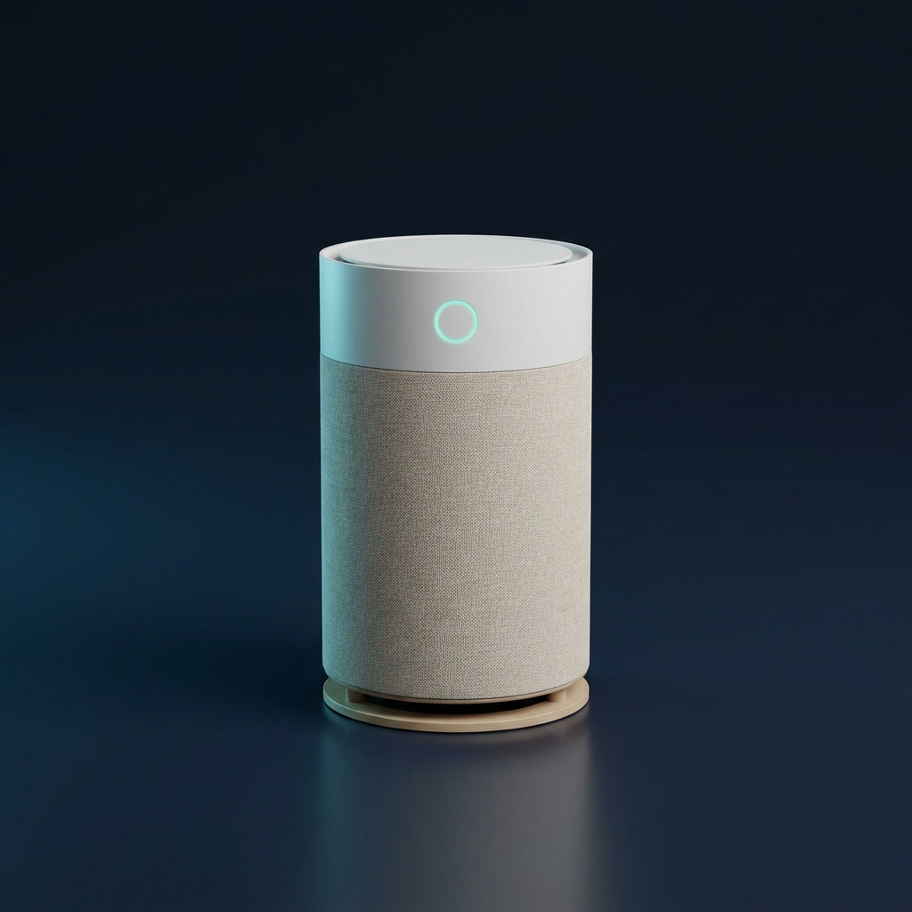

오프라인 행사장용 설문 키오스크 2종 + 실시간 통계 대시보드 + 관리자(엑셀 다운로드) 데모입니다.
가상의 제품 「NEXA One 스마트 공기청정기」 전시 부스를 가정했습니다.

객관식 4문항을 한 화면씩 순차 진행. 터치 선택 → 다음 이동 → 완료 후 자동 초기화.
1920×1080 고정 · 터치 UI제품 특장점 6종 탭 UI + 단일 질문 투표. 응답 직후 실시간 결과(비율·투표수)를 즉시 노출.
탭/슬라이드 · 실시간 결과키오스크 1·2의 응답을 실시간 수합해 참여자 수·문항별 비율을 시각화. 운영석/발표용 화면.
실시간 갱신 · 발표용누적 응답 전체 조회, 키오스크별 필터, 엑셀(CSV) 다운로드, 데이터 초기화.
엑셀 다운로드